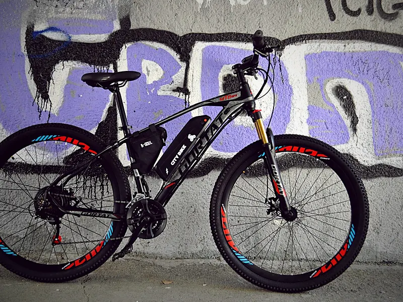
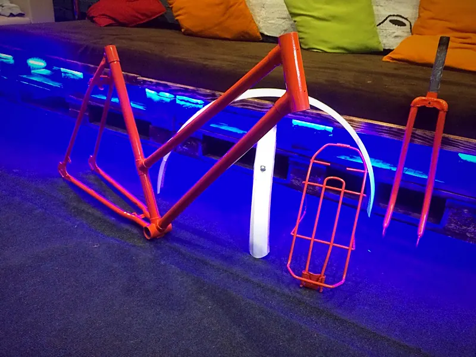

Express ТО
3 500 ₽
Чистка цепи, протяжка спиц, регулировка скоростей и тормозов, шиномонтаж.

Новосибирск · с 2012
Мастерская полного цикла: от точной диагностики до кастомной сборки. Велосипеды, электробайки, электромото, самокаты и аккумуляторы.
Что делаем

Комплексное ТО, обслуживание

Электровелосипеды, мото, самокаты: моторы, контроллеры, проводка

Li-ion АКБ под ваш байк и ваши характеристики

Установка электроники на ваш велосипед

Электровелосипеды, комплекты, запчасти

Покраска, сборка на заказ, кастом
Сломалось
Хрустит мотор, дисплей показывает ошибку, байк гаснет в горку. Онлайн-диагност расскажет, что это и как проверить самому.
Сервис
Чистка цепи, протяжка спиц, регулировка скоростей и тормозов, шиномонтаж.
То же плюс ревизия кареточного узла и чистка всей трансмиссии.
Полная ревизия: каретка, рулевой стакан, втулки, все линии и навесные элементы.

Мастерская
Мы сами катаемся: стрит, фристайл, электробайки каждый день. Поэтому знаем, что байк переживает на самом деле и как он должен работать. В команде механики, инженеры, электронщики, маляры и токари.
5,0★★★★★143 оценки · отзывы в 2ГИС →Витрина
Без корзины и онлайн-оплаты. Смотрите, что есть, собирайте подборку и отправляйте мастеру одним сообщением.
Вопросы
В CITY BIKE три пакета ТО: Express за 3 500 ₽, сезонное за 5 000 ₽ и комплексное за 7 300 ₽. Предварительная цена определяется после диагностики и зависит от сложности работ.
Обычно от 1 до 3 дней. Срочные работы без очереди стоят на 30% дороже.
На сайте заявлена бесплатная диагностика. Сложная диагностика неисправности электросистемы в прайсе указана от 500 ₽.
Да. Установим наш или ваш комплект под ключ: сборка колеса, установка, подключение и настройка контроллера. Цена от 8 000 ₽ без стоимости комплекта. Конфигурацию можно прикинуть в калькуляторе.
Да. Ремонтируем электровелосипеды, электромото и электросамокаты: моторы, контроллеры, проводку и Li-ion АКБ, включая замер ёмкости, балансировку и замену BMS.
Да. Собираем Li-ion аккумуляторы под ваш транспорт, габариты и нужные характеристики, из наших или ваших элементов. Работа от 10 000 ₽, конфигурацию можно прикинуть в калькуляторе.
Онлайн-оплаты на сайте нет. Соберите подборку и отправьте её мастеру в WhatsApp или Telegram: он уточнит наличие и забронирует товар.
Наличными, картой, переводом или через СБП, по счёту с ИП или ООО. Есть рассрочка и кредит.
Да, в день заказа после полной предоплаты: СДЭК, Энергия или Почта России. Сумму и сроки доставки сообщит менеджер.
Новосибирск, Вокзальная магистраль, 3, цоколь, въезд со двора, есть удобная парковка. Ежедневно с 11:00 до 20:00, кроме воскресенья. Перед приездом лучше позвонить: +7 913-758-55-71.
Новосибирск, Вокзальная магистраль, 3, цоколь, въезд со двора. Ежедневно с 11:00 до 20:00, кроме воскресенья.